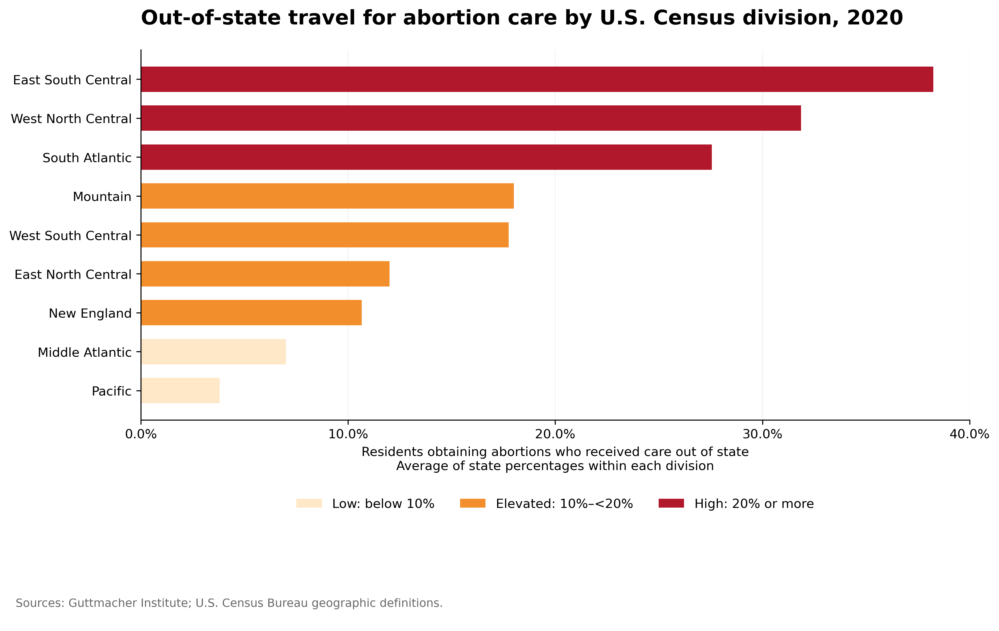
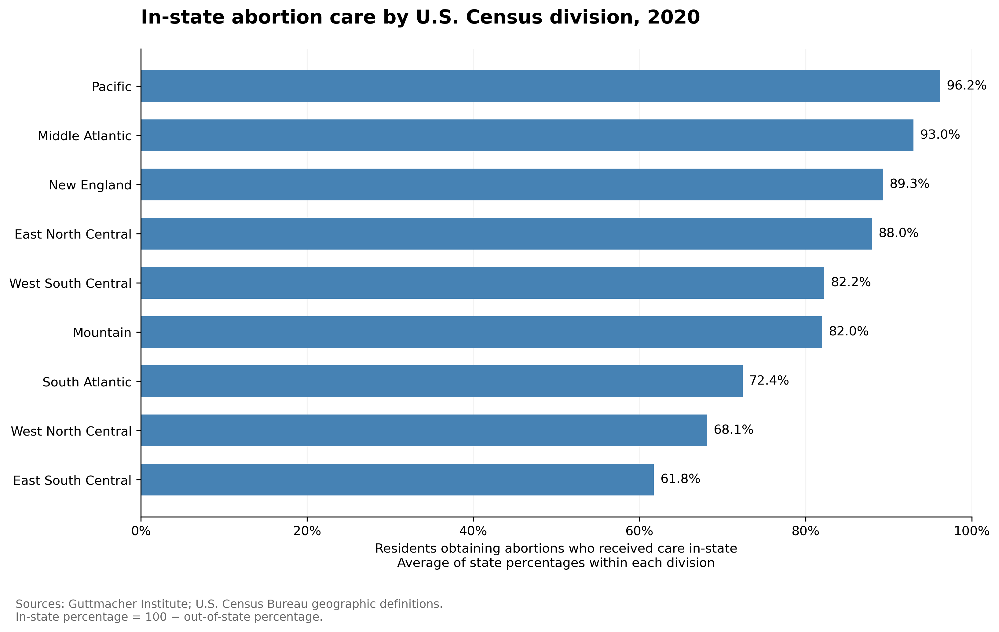

Proposition: Traveling across state lines for abortion care is common in the United States.
FOR the Proposition

Design Decisions and Rationale:
- (-1) Color scheme and thresholds: I used a light-to-dark color scheme to distinguish between low, elevated, and high percentages of out-of-state travel for abortion care. Dark red draws attention to divisions categorized as having high travel percentages. However, the thresholds were selected for this visualization rather than based on an established standard. Labeling percentages of 20% or more are considered “high”.
- (-0.5) Narrowed x-axis: I limited the x-axis to 0–40% to reduce unused space and make differences between divisions more visually prominent. Keeping the zero baseline preserves proportional bar lengths, but the narrower range shows the difference of magnitude. Removing percentage labels from the ends of the bars further emphasizes their visual length over their exact values.
- (1) Grouping states into Census divisions: I grouped states into the nine U.S. Census divisions and calculated the average of state percentages within each division. This reduces visual clutter and makes broad geographic patterns easier to compare than displaying all 50 states and Washington, D.C., separately. The resulting values describe average state percentages, rather than the percentage of all patients in each division who traveled.
AGAINST the Proposition

Design Decisions and Rationale:
- (1) Grouping states into Census divisions and emphasizing in-state care: I grouped states into the nine U.S. Census divisions and calculated the average of state percentages within each division. I then subtracted the out-of-state averages from 100 to obtain the corresponding in-state percentages. This reduces visual clutter and makes geographic patterns easier to compare than displaying all 50 states and Washington, D.C., separately. Emphasizing in-state care shifts attention toward residents who remained within their home state, supporting the argument that crossing state lines is less common.
- (2) Adding percentage labels to the bars: I placed percentage labels at the ends of the bars so viewers can immediately identify the proportion receiving care in-state without estimating values from the x-axis. These labels reinforce the high in-state percentages and make the opposing argument more explicit. This chart emphasizes exact values.
- (2) Using a full percentage scale: I used a 0–100% x-axis to place the in-state percentages within their complete possible range. The zero baseline preserves proportional bar lengths, while the long bars visually reinforce that in-state care predominates across the division averages.
Final Reflection
Throughout this project, a lot of different techniques were employed to explore the dataset, and it was surprising to see how the same data can be presented in two different ways. Being able to both support and oppose the proposition that traveling across state lines for abortion care is common in the United States with the same data shows how fine the line between persuasion and deception is. The transformations of the data, such as grouping the states into Census divisions and calculating in-state percentages, were straightforward. However, the more difficult part was deciding how to present the data in visualizations that support and oppose the claim. For the supporting chart, color thresholds and a reduction in the x-axis range were employed to make out-of-state travel appear more common. For the opposing chart, displaying the in-state percentages on a 0–100% x-axis and adding labels at the end of the bars emphasized just how high the percentages of in-state abortion care actually are.
An important observation made during this project is just how different charts can appear despite using the exact same data. The red color in the supporting chart draws attention to geographic Census divisions that have “high” travel percentages, even though the designation for “high” was set arbitrarily at 20%. The opposing chart makes in-state care appear more common by simply showing the percentage values at the end of the bars rather than relying on x-axis interpretation. A limitation of this data presentation, though, is that neither chart can demonstrate the differences between individual states within the geographic divisions. Depending on the state, it can be true that most residents can receive in-state care while a substantially high number of residents travel out of state.
Ethical analysis and visualization incorporate presenting accurate data while clearly explaining the calculations, design choices, and limitations that affect the visualization’s interpretation. Persuasive choices are reasonable when they help the audience quickly identify a pattern without encouraging an unsupported conclusion. They become misleading when they exaggerate a pattern, intentionally hide important differences, or make an arbitrary designation appear to be an established standard. This is exemplified in the supporting visualization, where using the term “high” for 20% can easily influence the audience’s interpretation even when the values are still factual. This project showed me that accurate numbers alone do not guarantee an ethical visualization; the way those numbers are presented matters just as much.